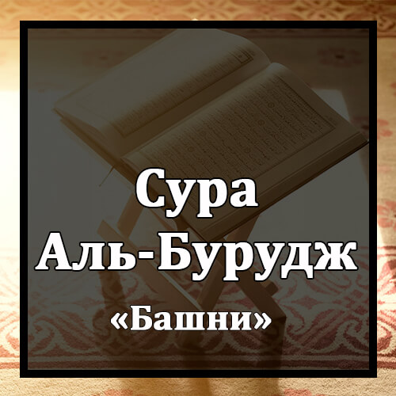

Бисмилляхир-Рахманир-Рахиим
Во имя Аллаха Милостивого и Милосердного!
Уас-Сама`и Затиль-Буруудж.
Клянусь небом с созвездиями Зодиака!
Уаль-Йаумиль-Мау`ууд.
Клянусь днем обещанным!
Уа Шахидин Уа Машхууд.
Клянусь свидетельствующим и засвидетельствованным!
Кутиля Асхабуль-Ухдууд.
Да сгинут собравшиеся у рва
Ан-Нари Затиль-Уакууд.
огненного, поддерживаемого растопкой,
Из Хум `Алейха Ку`ууд.
Вот они уселись возле него,
Уа Хум `Аля Ма Йаф`алюна Биль-Му`минина Шухууд.
будучи свидетелями того, что творят с верующими.
Уа Ма Накаму Минхум Илля Ан Йу`мину Билляхиль-`Азизиль-Хамиид.
Они вымещали им только за то, что те уверовали в Аллаха Могущественного, Достохвального,
Аль-Лязи Ляху Мулькус-Самауати Уаль-Арды УаЛлаху `Аля Кулли Шайин Шахиид.
Которому принадлежит власть над небесами и землей. Аллах - Cвидетель всякой вещи!
Инналь-Лязина Фатануль-Му`минина Уаль-Му`минати Сумма Лям Йатубу Фаляхум `Азабу Джаханнама Уа Ляхум `Азабуль-Хариик.
Тем, которые подвергли искушению верующих мужчин и женщин и не раскаялись, уготованы мучения в Геенне, мучения от обжигающего Огня.
Инналь-Лязина Аману Уа `Амилюс-Салихати Ляхум Джаннатун Таджри Мин Тахтихаль-Анхару Заликаль-Фаузуль-Кабиир.
Тем же, которые уверовали и совершали праведные деяния, уготованы Райские сады, в которых текут реки. Это - великое преуспеяние!
Инна Батша Раббика Ляшадиид.
Воистину, Хватка твоего Господа сурова!
Иннаху Хуа Йубди`у Уа Йу`иид.
Воистину, Он начинает и повторяет (создает творение в первый раз и воссоздает его или начинает наказывать и повторяет наказание).
Уа Хуаль-Гафуруль-Уадууд.
Он - Прощающий, Любящий (или Любимый),
Зуль-`Аршиль-Маджиид.
Владыка Трона, Славный.
Фа`алюн Лима Йуриид.
Он вершит то, что пожелает.
Халь Атака Хадисуль-Джунууд.
Дошел ли до тебя рассказ о воинствах,
Фир`ауна Уа Самууд.
о Фараоне и самудянах?
Балиль-Лязина Кафару Фи Такзииб.
Неверующие считают это ложью,
УаЛлаху Мин Уара`ихим Мухиит.
Аллах же окружает их сзади.
Баль Хуа Кур`анун Маджиид.
Это - славный Коран,
Фи Ляухин Махфууз.
находящийся в Хранимой скрижали.